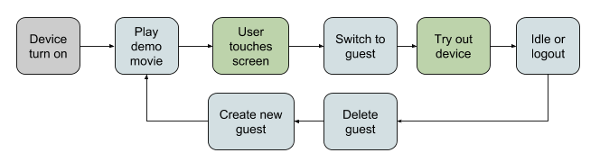
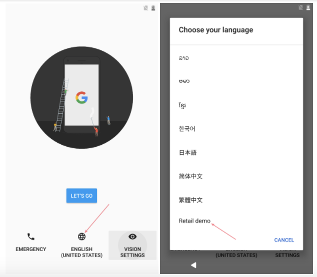

In this document
Android 7.1.1 and later offer system-level support for retail mode so users may readily examine the devices in action. This feature enables anyone in a retail environment to get a quick, safe, and consistent demonstration of an Android device and significantly reduce the cost and complexity of a retail mode for OEMs so that demonstration units are commonplace.
Key use cases
- Any off-the-shelf Android device can be set to retail mode by adding a single demo video to the build.
- All devices have a video highlighting the unique features of the device.
- Devices work in both online and offline environments.
- Device are self maintaining, requiring minimal interaction by employees.
Lifecycle
Figure 1. Retail demonstration mode option in Language selection
Setup Wizard (SUW)
Retail employees can enable retail mode directly from the first screen of any setup wizard by selecting the language Retail demo at the bottom of the list. This option is available for new devices shipped fresh from the factory. Once a consumer setup has completed, retail mode may no longer be available. Once selected, the device finishes SUW with an abbreviated flow.
Figure 2. Retail demonstration mode option in Language selection
Guest session
When the device enters retail mode, it switches to a new demo user and automatically starts the custom launcher specified in the overlay resource (described under Implementation). By default, this custom launcher plays the demo video on repeat until the user touches the screen to begin a guest session. At that time, the custom launcher starts the system launcher and then exits. OEMs can alter the custom launcher to additionally launch another service or activity on exit. See the Implementation section for details.
In order to maintain the integrity of retail mode, keyguard is disabled and certain actions from Quick Settings that could adversely affect retail mode are also disallowed, including:
- Airplane mode toggle
- Removing or modifying Wi-Fi access points (Settings)
- Changing carrier (Settings)
- Configuring hotspot (Settings)
- User switching
Additionally, access is also blocked to some global settings that can affect retail mode by disabling:
- Wi-Fi settings
- Cellular network configuration options, particularly hotspots
- Bluetooth configuration
- Backup & Reset, Date & Time, and Mobile Networks (they do not show up at all)
If the user is idle for some period of time (90 seconds by default), retail mode will show a system dialog to prompt the user to either exit the session or continue. If the user chooses to exit or if there's no response for five seconds, retail mode kills/wipes the current demo user, switches to a new demo user, and loops through the original video again. If someone turns off the screen using the power button, it comes back on automatically after a few seconds.
After exiting a demo session, devices mute themselves and reset some global settings, including:
- Brightness
- Auto-rotation
- Flashlight
- Language
- Accessibility
Exiting retail mode
In order to exit retail mode, retail employees must factory reset the device from the boot loader.
Examples and source
Find the custom launcher that plays a video in a loop within:
/packages/apps/RetailDemo
Implementation
Enabling RetailDemoModeService
Setup wizard sets a Global setting Global.DEVICE_DEMO_MODE=true to
indicate that the device has entered retail mode. Upon seeing this setting,
RetailDemoModeService creates and switches to demo user when user 0
is started, enables the custom launcher specified in an overlay resource, and
disables SUW. System Server and SystemUI also use this flag to manage aspects
of retail mode.
Setting custom launcher or video player
An OEM specifies a custom launcher by overriding the framework resource
config_demoModeLauncherComponent specified in:
/frameworks/base/core/res/res/config.xml
For example, with:
<!-- Component that is the default launcher when Retail Mode is enabled. --> <string name="config_demoModeLauncherComponent">com.android.retaildemo/.DemoPlayer</string>
The retail demo DemoPlayer app located at
/packages/apps/RetailDemo is the default custom launcher in the
Android Open Source Project (AOSP). The app looks for a video in
/data/preloads/demo/retail_demo.mp4 and plays it in a loop. When
the user touches the screen, the custom launcher disables its activity
component, which results in the default system launcher starting up.
The custom launcher must have its custom component marked as disabled by default so that it
doesn't show up in non-demo scenarios. In the demo scenario, System Server
enables the specified config_demoModeLauncherComponent when
starting a new demo session.
Setup wizard also looks for the above video to provide an affordance to enter retail mode. SUW can be modified to look for some other OEM-specific sign that retail mode is supported if the video is not a part of the demo.
If there are system A/B partitions, the system B partition must contain the demo
video at /preloads/demo. This gets copied to
/data/preloads/demo on first boot.
To set retail mode-specific settings, use:
Settings.Global.retail_demo_mode_constants. E.g.:
user_inactivity_timeout_ms=90000,warning_dialog_timeout_ms=10000
Note: 90000 milliseconds is the current timeout default but is configurable.
Finding sample images
This feature places sample photos in a special folder that is visible to any gallery app. The photos are available only in demo mode and cannot be modified by the demo user as they are in a protected directory.
Preventing Google accounts
Certain restrictions are set in the guest user, similar to managed
device/profile policies that prevent apps and users from performing certain
operations. One of these restrictions is DISALLOW_MODIFY_ACCOUNTS.
With this restriction, AccountManager and Settings do not allow the addition of
accounts. Some Google apps react to this restriction and show an error message,
and others will not prompt for an account (such as YouTube and Photos).
OEM apps should also check if DISALLOW_MODIFY_ACCOUNTS is set. But this is a
general problem not unique to retail mode. It is likely already solved for
enterprise use cases.
Customizing the system launcher
OEMs are free to choose their layout but should include apps that function well on the home screen and hotseat.
Customizing built-in apps for retail demo mode
Built-in apps may have their experience for retail demo mode customized by
calling the API UserManager.isDemoUser() to see if the app is
launched in a demo environment.
Following demo video guidelines
Demonstration videos should be in portrait layout (or natural orientation of the device, if tablet) and can be any length greater than five seconds. Content should not result in burn-in, since it will be played 24/7 when on display.
Maintenance
Bringing the device out of retail mode
This can be done only by factory resetting from the boot loader.
Auto-OTA of system software
By default, when retail mode is enabled, device policy is set to over-the-air (OTA) update automatically. Retail devices will download, reboot, and install the update (respecting battery thresholds) without confirmation even if it is marked as optional.
Caution: If using System A/B partitions for OTA, once an OTA is received, the device cannot find original retail mode resources in the System B partition. So any subsequent factory reset will result in an inability to go back into retail mode.
Updating demo video via the web
The RetailDemo app in /packages/apps/RetailDemo has the ability to
update the demo video if there is network connectivity. The URL to download the
video from can be configured by overriding the following string value in the
RetailDemo app:
<!-- URL where the retail demo video can be downloaded from. --> <string name="retail_demo_video_download_url"></string>
If different videos need to be used in different regions, then different
download URLs can be configured by using locale-specific string resources
res/values-*/strings.xml. For example, if different videos need to
be used in the U.S. and the U.K., then corresponding download URLs can be placed
in res/values-en-rUS/strings.xml and
res/values-en-rGB/strings.xml, respectively.
In res/values-en-rUS/strings.xml:
<string name="retail_demo_video_download_url">download URL for US video goes here</string>
And similarly in res/values-en-rGB/strings.xml:
<string name="retail_demo_video_download_url">download URL for UK video goes here</string>
This video will be downloaded at most once per every device reboot. When the video on the device is being played, RetailDemo app will check in the background if the download URL is provided and the video at the URL is newer than the one being played.
If so, RetailDemo app will download this video and start playing it. Once this video is downloaded, the downloaded video will be used for playing in the demo sessions going forward. None of the checks happen again until after next reboot.